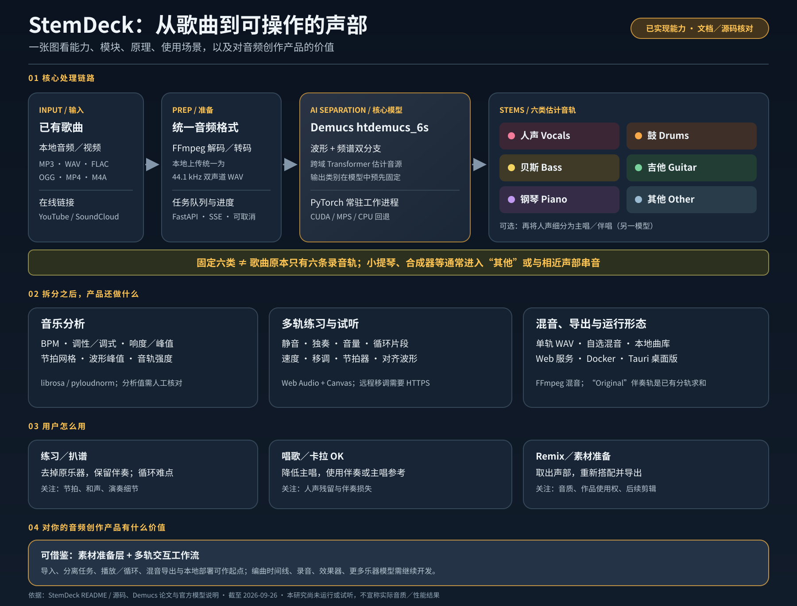
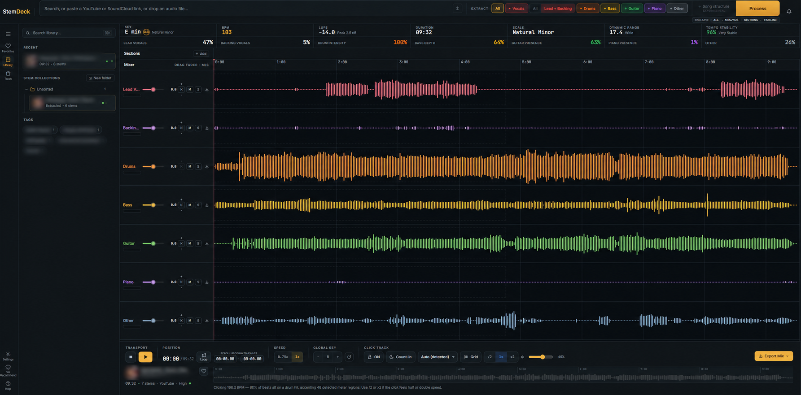

Open source audio · project 004
从一首歌，走向可操作的音轨。
StemDeck 将现成歌曲估计为六类声音，让你分别试听、静音、循环练习、重新搭配并导出。这张图串起它的能力、原理、效果、场景和产品价值。
它是一个面向练习、学习和素材准备的本地音频工作台：核心是固定六类音源分离，价值是把分离结果接入可用的试听与创作流程；它不会识别无限种乐器，也不会还原录音室原始分轨。


它能做什么，效果是什么
这里的“效果”指用户能完成的操作与获得的产物；分离音质会随歌曲变化，本研究尚未用音频样本实测。
能力：从歌曲得到六类声音
导入本地音频或受支持的链接，估计人声、鼓、贝斯、吉他、钢琴和其他声音，并显示各轨波形与基础音乐分析。
效果：变成可练习的素材
可以单听或静音声部、循环难点、调整播放、组合伴奏，最后导出单轨或自选混音，供跟练或继续编辑。
边界：不是万能识别器
六类是模型预设的输出；小众乐器可能落入“其他”或混入相近音轨。分轨会有串音、伪影，不等于录音室原始分轨。


技术原理：先估计，再操作
分离模型负责从混合波形中估计声音来源；StemDeck 把输入、分析、试听和导出连接成一条工作流。
导入音频
本地文件或受支持的在线链接。FFmpeg 将不同格式准备成模型可处理的音频。
估计六轨
Demucs htdemucs_6s 推断人声、鼓、贝斯、吉他、钢琴和其他声音。
理解歌曲
计算 BPM、调性与响度，展示波形和节奏线索；分析结果仍需人工核对。
试听与导出
静音或独奏音轨、循环片段、调整播放，并导出单轨或选定混音。
六条音轨，各有用途
下方是模型输出类别的说明，不是本页面生成的真实音频。实际分离会因曲目和编曲而不同。
选择一个使用场景
点击场景可查看典型操作、期望产出和需要核对的地方。这些是功能分析，不是本次实测。
乐器跟练
怎么做：降低原吉他、鼓或贝斯轨，保留其余伴奏，循环难点片段。
得到什么：更容易听清自己演奏与伴奏的关系。
要核对：分轨可能残留其他乐器，练习时仍需参照原曲。
对你的音频创作产品有什么价值
它提供的是“歌曲素材 → 可操控声部 → 练习或继续创作”的参考实现，适合用来验证产品路径与交互。
可借鉴的产品闭环
把分离结果直接变成静音、独奏、循环、重混和导出动作，形成“听懂素材—拆解—搭配—再创作”的工作流。
可复用的技术分工
参考 FFmpeg、Demucs、FastAPI、Web Audio 与桌面封装如何协作，先做本地原型，再决定是否加入云端处理。
下一步值得扩展
围绕创作增加时间线编排、效果器、录音、协作或可插拔分离模型；对新乐器类别，需要另选或训练相应模型。
- 功能依据：StemDeck README；处理流程源码与分离工作进程源码。
- 模型原理与钢琴轨限制：Demucs 官方仓库、HT Demucs 论文。